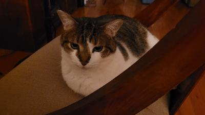
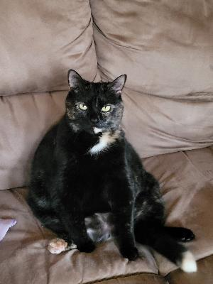

Cats, which are commonly referred to domestic cats or house cats, are small domesticated mammals. They are the only species in the Felidae family to be domesticated. The most common type of cat are domestic shorthairs, which have been around since 2000 BCE. The oldest domesticated cat breed is the Egyptian Mau; they are a spotted shorthair cat with around 3,000 existing worldwide. The earliest known interaction between humans and cats most likely happened during the early days of agriculture. Since humans needed their grain to be safe from rodents and cats needed a steady food source, a symbiotic relationship was created between the two and cats quickly became an integral part of human life.
Domestic cats are near identical to their wild counterparts. Their facial features have barely regressed compared to dogs and they have kept their aloof demeanor and independent nature. These characteristics have allowed cats to thrive as predators, which is why feral cats are able to survive in the wild. Cats communicate through their tail movement, vocalization, use of eye contact, and resting positions. Happy cats usually have upright or gently curved tails; vocalize through purring, chirping, and/or trilling (meowing and purring at the same time); blink slowly when making eye contact; and rest on their backs or in a comfortable (and often vulnerable) position.
History and General Nature Source
| Differences between Tabby and Tortoiseshell Cats | |
|---|---|
| Tabby | Tortoiseshell |
| "M" shaped marking on forehead | Mottled black and orange markings |
| Can be male or female | Almost exclusively female (males have XXY chromosomes) |